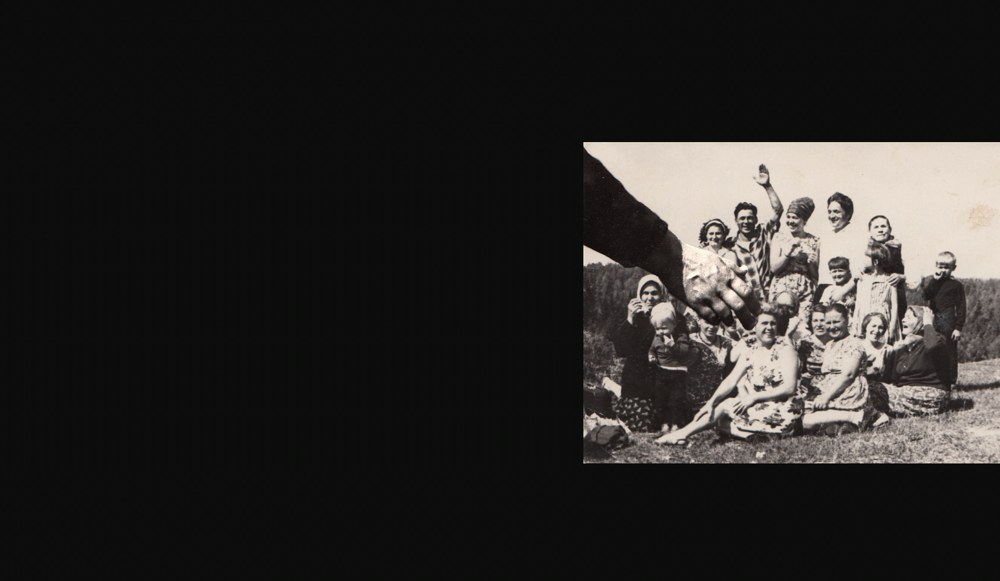

Воспоминания о ГУЛАГе
В рамках проекта «Мой ГУЛАГ» Музеем истории ГУЛАГа собираются воспоминания людей, которых коснулись репрессии. Целью проекта является создание архива интервью, объединенных темой ГУЛАГа, и актуализация памяти о явлении, которое долгое время активно вытеснялось из ментального пространства наших соотечественников и так и осталось неосознанным и не пережитым опытом.